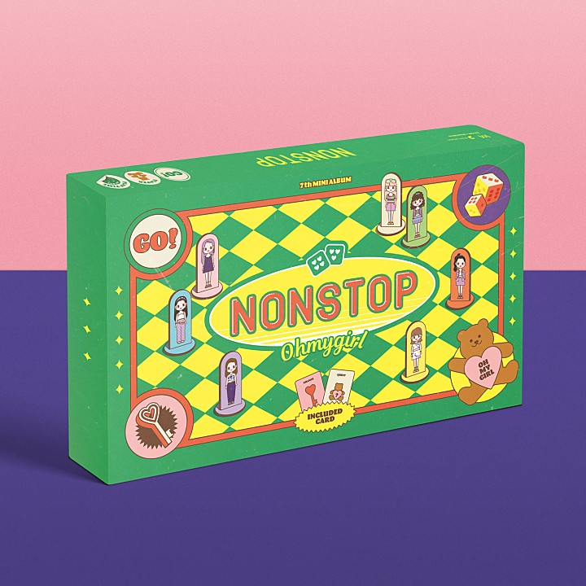
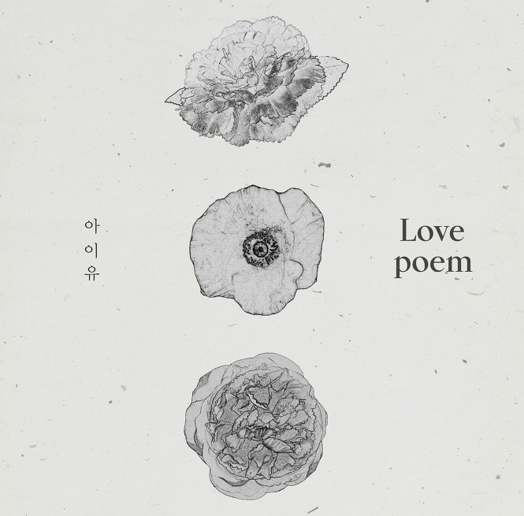

로그인
지니차트
TOP200
순위
듣기
추가
곡명
아트스트명
앨범명
담기
다운
M/V
공유
1
깡 Official Remix
식케이 (Sik-K) & pH-1 & 박재범 & 김하온 (HAON)
깡 Official Remix
2
MORE & MORE
TWICE (트와이스)
MORE & MORE
3
사랑하게 될 줄 알았어
전미도
슬기로운 의사생활 OST Part 11
4
 에잇(Prod.&Feat. SUGA of BTS)
아이유 (IU)
에잇
에잇(Prod.&Feat. SUGA of BTS)
아이유 (IU)
에잇
에잇(Prod.&Feat. SUGA of BTS)
아이유 (IU)
에잇
5
너에게 난, 나에게 넌
미도와 파라솔
슬기로운 의사생활 OST Part 12
6
아로하
조정석
슬기로운 의사생활 OST Part 3
7

살짝 설렜어(Nonstop)
오마이걸 (OH MY GIRL)
NONSTOP

Love poem
아이유 (IU)
누구를 위해 누군가
기도하고 있나 봐
00:00
04:18
재생목록(195)
가사보기
동기화
중복곡삭제
정렬
다시 난, 여기
백예린
너를 만나
폴킴
우리 왜 헤어져야 해
신예영
11:11
태연
어떻게 지내
오반
담기
다운
삭제
추가